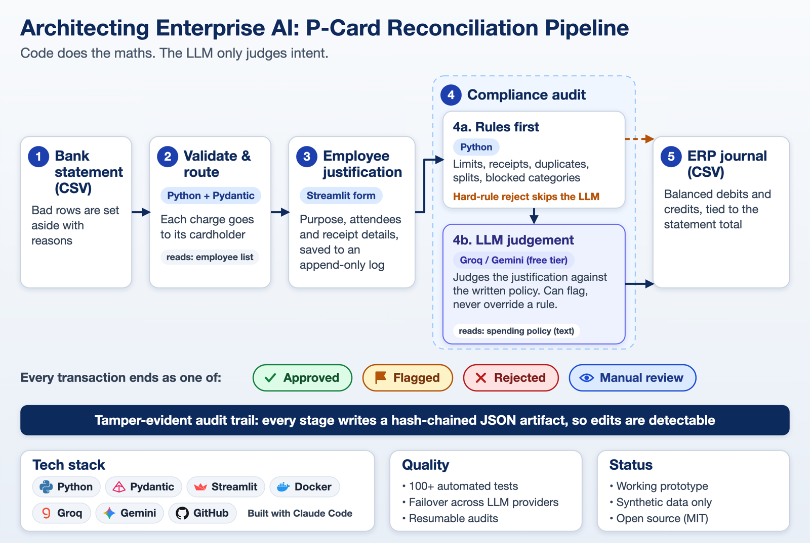
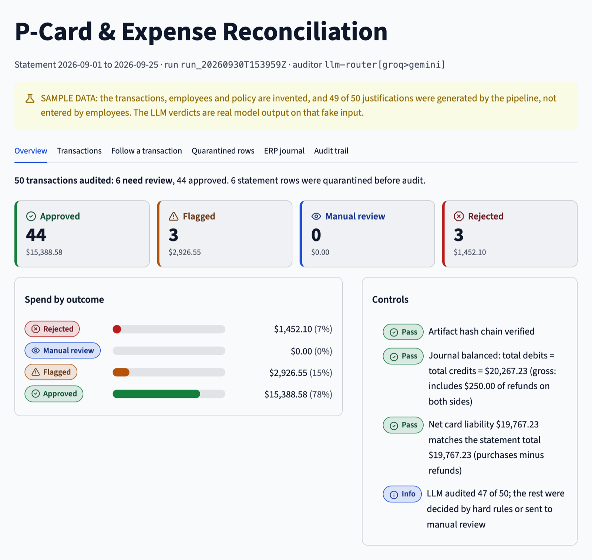
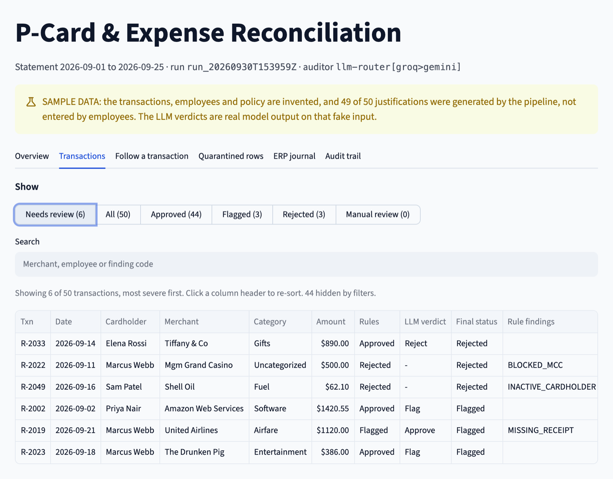

Finance operations · Case study
P-Card & Expense Reconciliation
A pipeline that takes a corporate purchasing-card statement to a balanced, ERP-ready journal entry. Deterministic code does everything computable. The LLM does one thing: judge whether an employee's explanation satisfies the written spending policy.
- Role
- Designer and builder
- Stack
- Python, Pydantic, Streamlit, Gemini / Groq / OpenRouter, Docker
- Data
- Synthetic, for demonstration
- Status
- Working prototype
The problem
Finance teams reconcile hundreds of card transactions a month. Most checks are arithmetic and rules. One is not: does this employee's explanation actually satisfy our spending policy? “Team bonding” at a bar is not the same as “dinner with a procurement contact to discuss renewal terms”.
The design principle: use the LLM only where rules cannot
Splitting the work this way keeps the numbers auditable and confines AI judgement to the one step that needs it.
- Deterministic Python: schema validation and quarantine of dirty rows, card-to-employee-to-cost-center routing, limits, receipt matching, duplicate and split-purchase detection, GL mapping, and balanced double entry using
Decimal. - LLM, qualitative only: is the justification specific and plausible, does it satisfy the meal, gift, travel and home-office policy text, and is it personal use dressed up as business use.
The model can escalate a finding but never downgrade one. If the LLM approves something a rule flagged, the flag stands.
How it flows
Four stages, each writing its own JSON artifact instead of holding state in memory: validate and route, collect justifications, compliance audit (rules first, then the LLM), and the ERP journal.

Controls a finance team would ask for
- Immutable artifacts and a hash chain. Each stage's output is written once and made read-only. Every artifact stores the SHA-256 of its own payload and the previous stage's, and a verify command re-checks the chain so any edit is detected.
- Append-only justification log. Each submission records who and when. A later entry supersedes an earlier one but never erases it.
- Journal integrity. The exporter refuses to write unless debits equal credits and net card liability ties to the statement control total.
- Honest provenance. Every justification is labelled as employee-entered or sample data, with a warning banner whenever sample data is present.
- Prompt-injection posture. Employee text is treated as untrusted data. The model sees the justification, merchant, amount and department, not names, emails or card numbers.


Resilient LLM routing
A small reusable client fails over across Gemini, Groq and OpenRouter, throttles per provider for free-tier limits, disables a provider after rejected credentials, and retries invalid output on a different provider. A partial outage sends only the affected transactions to manual review. A total outage stops the audit without saving anything, so it can be retried rather than baking an all-manual-review result into the record.
Quality
115 offline tests cover money parsing, quarantine behaviour, provider failover, the hash chain and tamper detection, and total versus partial outages. A dedicated QA pass found 26 defects, all fixed, with regression tests. One example: an amount like 1,23 was silently read as $123.00. A --mock-llm mode runs the whole pipeline with no API keys.
The sample statements and employees are invented, and most justifications are generated by the pipeline. The verdicts are real model output on that fake input, and any approval percentage reflects the invented data, not a measured accuracy.